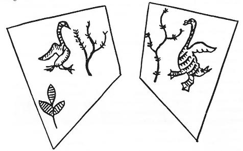

Oğuz-Kağan destanını incelerken, Oğuz'un birinci karısının gökten indiğini ve ikinci karısını da bir göl ortasındaki ağaç kovuğunda bulduğunu söylemiştik. Uygurların türediği tek ağaç da, yine iki nehrin meydana getirdiği küçük bir adacıkta bulunuyordu. Oğuz-Han, lt-Barak kavmi ile savaş yaparken mağlup olmuş ve nehrin ortasındaki küçük bir adacığa sığınmak zorunda kalmıştı, işte tam bu sırada Oğuz-Han'ın ölen askerlerinden birisi, bir ağaç kovuğunda bir çocuk doğurmuş ve bu çocuğa Kıpçak adı verilmişti. Oğuz destanını yazanlar, Kıpçak sözünün "ağaç kovuğu" anlamına geldiğini ısrarla ileri sürerler. Bu her üç efsanede de, küçük bir adacık ortasında bulunan bir ağaç kovuğundan insanların türemiş olması, herhalde tesadüfen söylenmiş bir olay olmasa gerektir. Bu olay, Türk mitolojisinin çok önemli bir motifi idi. Bu sebeple de türlü Türk destanlarında, kendisini gösterip durmadan geri kalmıyordu. Bunu, böyle kabul etmemiz lazımdır.
Kutup yıldızı ile ilgili bölümümüzde yerle göğü birbirine birleştiren Demir-Ağaç'tan söz açmıştık (Bk. 2. Cilt). Bu, daha ziyade dünya ve uzayın yapısı (Cosmos) ile ilgili görüşlerdir. Biz burada daha ziyade ağacın Türkler yanındaki manevî rolü üzerinde duracağız. Dede Korkut Kitabında Basat'ın Tepe-Göz'e verdiği şu cevap, İslamiyet’ten çok önceleri Türklerin sahip oldukları düşünceleri de yansıtır.147
"Kalırda, koparda yirüm gün, ortaç,
"Karangu dün içre yol azsam, umudum Allah!
"Kaba âlem götüren Hanumuz Bayındır Han,
"Kırış güni öngdin depen alpumuz Ulaş oğlu Salur Kazan,
"Atam adın sorar olsan kaba ağaç,
"Anam adın der isen Kağan Arslan,
"Menüm adum sorar isen Oruz oğlu Basat'dur !"
Tabii olarak bu metni bizim okuyuşumuzla, değerli meslektaşım Sayın Prof. Muharrem Ergin'in okuyuşu arasında epeyce fark vardır. Başat, Tepe-Göz'e şöyle diyor : "Dururken, kalkarken yerim senin gibi değil, gündüz ve aydınlıktır. Karanlık gecede de yolumu şaşırırsam, ümidim Allah’tadır! Büyük bayrağımızı taşıyan Hanımız, Bayındır Han'dır. Savaş gününde önden tepip giden alpımız, Ulaş oğlu Salur Kazan'dır. Atamın adını sorarsan kaba ağaç'dır. Anamın adı nedir dersen, Kağan Arslan'dır. Benim adımı sorarsan, Oruz oğlu Basat'dır!"
Dede Korkut Kitabında ağaç için söylenmiş çok güzel bir mersiye daha vardır.148 Fakat bu güzel şiirde İslamiyet’in tesirleri çok daha fazlalaşmış ve eski Türk an'anelerini örtmüştür. Eski Türkler ağaç denince, yalnızca dıştaki yapraklarını ve gövdesini değil; kökünü de beraberce anlarlardı. Bu sebeple ağaca söylenen bu mersiyede şu iki satır çok önemlidir:
"Baştın ala bakar olsam, başsuz ağaç!
"Dibün ala bakar olsam, dipsüz ağaç!
Ağacın kökü de dış kısımları kadar önemli idi. Bundan sonraki bölümlerimizde bu konuyu daha derin olarak incelemeye çalışacağız. Basat'ın Kaba, yani ulu ve büyük bir ağaçtan türemiş olması çok önemli bir noktadır. Kaba ağaç deyimine Türk edebiyatında çok rastlıyoruz. Dede Korkut Kitabında şöyle deniyor:149
"Kaba ağaçda tal budağun kurumuş idi, yeşerdi, gögerdi ahır !"
XV. asır saz şairlerinden Ozan da şöyle diyor:
"Bir devletlu yohsul olsa, "Uslu isen gelme ana!
"Yazıda kaba ağaca, "Ulu kuşlar konar olur!"
Eski Orta Asya’da Bay-Yığaç150, Ala-Yıgaç151, Kara-Yıgaç152 gibi yer ve boy adlarına rastlamak mümkündür. Önceleri Kara-Hıtay devletinin ve sonra da Çingiz-Han'ın meşhur vezirlerinden biri olan Kara Yıgaç Buyruk da kendi öz adını böyle bir yer adından almış olsa gerekti.153 Nitekim bu çağdaki Uygur reisi Barçuk-Art Tegin'in adı da, bir dağ beline izafeten alınmıştı.
Uygurlar arasında tutunmuş ve Uygurlar vasıtası ile diğer Türklere de yayılmış olan Manihaizm’de de ağaç, çok önemli bir unsurdu. Mani dinine mensup olanlara göre Beş Hayat ve Beş de ölüm ağacı vardı.154 Fakat Manihaizm’deki bu on ağaç an'anesi Türklerinkinden oldukça ayrı özellikler gösteriyordu.
Manas destanında, kısır kadınların kutsal Elma ağacının altında oynamaları ile çocuklarının olacağına inanıyorlardı (Bk. S. 504). Ayrıca Orta Asya edebiyatında Arçalı, yani "ardıçlı" adını taşıyan birçok kutsal yerler vardı (Bk. S. 505-6). Ardıç ağacı da Türklerce kutsal sayılan ağaçlardan biridir.
Artık Yunus çağında ağaç eski kutsallığını kaybetmiştir. Yunus Emre imansız ve hissiz insanları kuru bir ağaca benzetir:
"Kur'ağacı niderler, kesip oda atarlar,
"Her kim âşık olmadı, benzer kuru ağaca.
Türklerin ağaç ile ilgili inançlarını derin olarak incelemeye girmeden önce, "Ağaç kültü" ile "Orman kültü"nün ayrı ayrı şeyler olduğunu ve bunları birbirinden ayırma zorunda olduğumuzu belirtmek mecburiyetindeyiz.
Altay Türk Mitolojisinde "Dünya ve Gök Ağacı": Altay mitolojisine göre gökyüzüne doğru çok büyük bir çam ağacı yükseliyordu. Gökleri delip çıkan bu ağacın tepesinde ise Tanrı Bay- Ülgen otururdu.155 Şaman davullarında da bu gök ağaçlarını görüyoruz (Bk. Şekil. 14). Şaman davullarındaki bu ağaçların kökleri dünyada değil; daha ziyade göğün başladığı yerden itibaren başlıyordu. Altay Yaratılış destanında olduğu gibi bu ağaçların dokuz tanede dalları vardı. Bu gök ağaçları genel olarak, gökteki bir dağ veya tepe üzerine oturtulmuşlardı. Ağacın bir yanında ay ve diğer yanında da güneş bulunurdu.
Güney Sibirya'daki Abakan Tatarlarının efsanelerinde bu görüş biraz daha değişmiştir. Onlara göre dünyanın ortasında, göklere kadar yükselen büyük bir demir dağ vardı. Bu dağın üzerinde de "Yedi dallı bir kayın" ağacı bulunuyordu.156 Abakan Tatarlarında bu ağacın yedi dallı olarak kabul edilmesi, daha ziyade Batı Sibirya halkları ile Batı Türklüğünün tesirlerine bağlanmalıdır. Kaç Tatarları bu kutsal kayından şöyle söz açarlardı157:
"Altın yapraklı kutsal kayın! Sekiz gölgeli kutsal kayın! Dokuz köklü, altın yapraklı, Bay-Kayın!.."
Altın yapraklı kutsal kayınlardan az sonra bahsedeceğiz. "Sekiz gölgeli" denmesinin manası ise pek anlaşılmıyor. Fakat Yakut Türklerine göre Dünya, sekiz köşeli idi. Bu kutsal kayın ağacı Altaylarda 9 dallı idi. Burada ise "Dokuz köklü" olmuştur. Bununla da ne denmek istendiği pek açık olarak anlaşılmıyor.
Abakan Tatarlarındaki Dünya Ağacı'nın 7 dallı olması ile Batı Sibirya mitolojisine yaklaştığını söylemiştik. Fin-Ugor kavimlerinden Ostyak'lara göre de böyle bir dünya ağacı vardı ve göğün 7 katını da delerek ta yükseklere kadar çıkıyordu.158
Şekil 17: Batı Sibirya Samoyedlerine göre "Hayat ağacı" ile ay ve güneş.
Yine aynı kavimlerin diğer efsanelerine göre ise, Dünya ortasında büyük bir deniz vardı ve bu ağaç da gıdasını bu denizden alarak yükseliyordu.
Bazıları da bu ağacın köklerini büyük nehir kaynaklarından aldıklarını söylüyorlardı.159 Batı Sibirya'daki Dünya Ağacı ile ilgili inançların Altaylardan buralara gittiğini söyleyenler var ise de, bu inancın bütün Sibirya ve Orta Asya mitolojisinde yer etmiş olduğunu biliyoruz.160
Moğollar bu dünya ağacı motifini Budizm ve Lamaizm tesirleri ile büsbütün dejenere etmişlerdi. Moğollar çamurdan, piramit şeklinde bir tepecik yaparlar ve bunun üstüne de ağaç dikerlerdi. Onlara göre zirvesi dört köşe olarak yapılan bu tümsek bir dünya dağı ve ağaç da bir dünya ağacı idi. Moğol mitolojisine göre dünya, büyük bir deniz ortasında yüzerdi. Bu dağın tepesinden bakılınca ise dünya, adeta bir at nalı kadar görünürdü. Kutsal dağın tepesinden öküz başı büyüklüğünde bir taş yuvarlanmış olsa imiş, dünyaya ancak 50 sene sonra inebilirmiş.161
Kutsal kayın ağaçları ve kayın ağacından türeme: Altay ve Tanrı dağları bölgelerinde kayın; Batı Sibirya'daki Fin-Ugor kavimlerinde ise sedir ve çam ağaçları önemli idi. Kayın ağacı, eski Türklerin günlük hayatlarında da çok önemli bir yer tutmuştu. Türkler en iyi ve sağlam oklarını kayın ağacından yapar ve toz dedikleri yay kılıflarını da kayın ağacı kabuklarından çıkarırlardı. Yayın üzerine yapıştırılan bu kabuklar, yayı daha elastiki bir hale sokarlardı. Esasen eski Türkler kayın ağacına da tos derlerdi. Çadır ve kulübelerin çatıları kayın ağacı kabukları ile örtülür ve yemek vs. için kullanılan kaplar da yine kayınların kütüklerinden çıkarılırdı. En iyi eyer ve semer ağaçları da yine kayından yapılırdı. Sayın Prof. Abdulkadir İnan, kayın ağacının Türk dinindeki yeri üzerinde biraz durmuştur.162 Sayın üstadın bu eserinde verdiği bilgilerin dışında, Uygurların türeyiş efsanesini aydınlatabilecek diğer materyalleri de ilâve ederek, kendi tezimiz bakımından bir sonuca varmaya çalışacağız.
Yakut Türklerinde Kayın ağacı kadar, Karaçamlar da önemli idi. Yakut Şamanlarının her birisinin bir ağacı vardı. Bu ağaca da Turuu adı verilirdi. Gençler Şaman olmaya niyetlenince hemen bir ağaç dikerler ve bu ağaç büyüdükçe de rütbeleri artardı Şamanın ölümü ile birlikte ağacı da yok edilirdi. Tabii olarak bu inanışın önceleri de vardı. Yakut mitolojisine göre Tanrı gökte ilk Şamanı yarattığı zaman, onun evinin kapısının önüne bir de 8 dallı bir ağaç dikmişti. Gökteki Şaman ebediyen yaşadığı için, onun ağacı da solmadan ve çürümeden ebediyen dururmuş.

Şekil 18 : Sibirya Şamanlarının elbiselerinde bulunan çift veya tek başlı dev kartalları gösteren üsluplandırılmış semboller (İvanof, Aynı esr., s. 57, 36 - 37).
Bu sebeple bu kutsal gök ağacına, "yıkılmayan, çökmeyen" ağaç anlamına Tuspet-Turuu demişlerdi. Ölümlü Şamanların yerdeki ağaçları ise, yalnızca Turuu idi. Gökteki bu ebedî ağaç zamanla büyümüş ve her tarafa dal budak salmış ve Tanrının çocuklarının hepsi de bu ağacın dallarına saklanıp onun himayesine girmişlerdi. İnsanların ruhları da bu ağacın dalları arasında uçuşur dururlarmış. Bir insan doğduğu zaman, bu ağacın dalları arasından bir ruh gelir ve insana can verirmiş. Yakutların büyük Tanrısı Ayığ-Toyon, yeryüzündeki insanların zahmet çektiklerini ve kötü ruhlarla hastalıkların elinde kırılıp gittiklerini görünce, yeryüzüne de üç Şaman göndermiş ve onların da çadırlarının önüne üç ağaç dikmiş. Yeryüzüne inen üç Şamana ağaçlarının yanından ayrılmamalarını söylemiş ve kötü ruhları nasıl yenebileceklerini, insanlığa ne gibi iyilikler yapabileceklerini hep bu ağaçların altında tembih etmişti. Fakat yeryüzündeki bu ağaçlar da, Şamanlar da, insanlar gibi ölümlü oluyorlardı.163
Altay Şamanları da gökten inen kutsal bir kayın ağacından sık sık söz açıyorlardı. Sayın üstadımız Prof. A. İnan da gökten inen kayın ağaçları ile ilgili duaları söz konusu etmiştir.164 Yukarıda anlattığımız Yakut efsanesini bir mukayese malzemesi olarak ele almadan, Altay Şamanlarının dualarının derinliğine inmenin imkânı yoktur. Altay Şamanlarına göre, 'İnsanlar türediği zaman, Umay-Ana'mızla beraber iki kayın ağacı da yere indi165". Umay-Ana ve Hayat Ağacı üzerinde, bundan sonraki bölümümüzde daha geniş olarak duracağız.
Toba devletinde ölü gömüldükten sonra büyük bir tören yapılır ve ondan sonra da büyük bir kayın ormanı dikilerek ağaçlar yetiştirilirdi.166 Bu inancın daha ziyade "Orman kültü" ile ilgili olması çok muhtemeldir. Bu gibi orman kültlerini Müslüman olmuş Kara-Koyunlularda da görüyoruz.167
Manas destanında Tanrıdan haber getiren aksakallı bir ihtiyar çocuğa bir kayın ağacı üzerinden seslenmiş ve ona iyi haberler verdikten sonra da kaybolmuştu (Bk. S. 508). Oğuz destanındaki olayları aydınlatmak için mukayese malzemesi olarak kullandığımız ve Altaylarda derlenmiş olan Kara-Atlı Han hikâyesindeki genç de, hep kutsal kayın ağacına yakın durmuş ve ondan ilham almıştı (Bk. S. 311-3). Anadolu'da da tek ağaçlara ne derece büyük bir önem verildiğini hepimiz biliriz. İstanbul'daki büyük çınarlar gibi ulu ağaçlar, umumiyetle Türkler tarafından saygı görmüş ve kutsal sayılmıştı. Bunların yanında insanlara kötülük veren büyük ağaçlar da yok değildi. Tanrının bir ağacı yıldırım ile yakması, boşuna yapılmış bir iş değildi. Genel olarak sincap şekline giren şeytanlar bu ağaçların kovuklarında saklanır ve insanlara kötülük yapmak için hazırlanırlardı. Bunu hisseden Tanrı şeytanı, koynunda saklayan ağaçla birlikte yakar ve ortadan kaldırırdı.
Ağaçla ilgili en güzel efsaneler, şüphesiz ki Altay bölgeleri ile büyük devletler kurmuş olan Orta Asya Türklerinde söylenmişti. Kuzey-Batı Sibirya ile Rus bozkırlarına gidildikçe ağaç kültü, bu bölgelerin iklimi ve havaları gibi kötüleşir. Mesela Fin-Ugor kavimlerinden Ostyaklara göre Tanrı, kız kardeşi ile karı koca hayatı yaşayan ilk insanlara kızmış. Bunun üzerine de Karaçam ağacından bir kadın yapmış. Bu defa adam, ağaçtan türeyen bu kadınla yaşamaya başlamış. Fakat adamın kız kardeşi zamanla erkek kardeşini kıskanmaya başlamış ve ne yapıp yapmış, ağaçtan türeyen kadını öldürüp onun kıyafetine girmiş. Bu yolla da kardeşinden bir çocuğu olmuş. Tanrı bunu duyunca, hemen kadınla çocuğu ortadan kaldırmış ve onların kanları ile de Pori adlı bir ağaç yapmış. Dişi bir ayı da bu ormanda gezerken nasılsa bu ağacı yemiş ve bu yolla da gebe kalmış. Zamanı gelince doğurmuş. Fakat nasılsa yavrusu ayı değil; kadınların ceddi olan bir kız çocuğu oluvermiş.168
Görülüyor ki Batıya gidildikçe, Orta Asya Türk halklarının söyledikleri derin manalı ağaç efsanelerinden eser kalmamaktadır.
"Hayat ağacı" ile ilgili Türk inançları: Hayat ağacı ile Hayat suyu, yeryüzünde en çok yayılmış inançlardır. Hayat ağacı ile Hayat suyunun yanında üçüncü önemli bir motif daha vardır ki, o da Hüma Kuşu'dur. Onun yeri ise, aklın alamayacağı ve gözün göremeyeceği yükseklerdi:
"Yücelerde olur ol Hüma kuşu,
"Dostun muhabbettür aşıka işi,
"Pirim. "Hatayi’dir, cümlenin başı,
"Dîdâr ile muhabbete aşkolsun!''
(Hatayî, Şah İsmail)
Tuba ağacı ile ilgili Ön Asya’daki inançları biliyoruz. Hayat ve insanlar için her türlü iyi talih hep bu ağaçtan gelirdi. Çok büyük olan bu ağacın milyonlarca, daha doğrusu yeryüzündeki insanların sayısı kadar yaprağı vardı. Bir insan ölünce, bu ağaçtan da bir yaprak düşerdi. Bu ağaç da diğer hayat ağaçları gibi bir su kaynağında bulunurdu. En eski Semitik mitolojide ve hatta Sümerlerin Gılgamış destanında da Cennet, kutsal sedir ağaçları ile kaplı bir dağ üzerinde bulunur ve bu dağın yanından da bir nehir geçerdi. Tevrat, İncil ve daha sonra Kur'an'da geçen Cennetteki dört ırmak hakkında da bilgimiz vardır. Bir rivayete göre bunlar kaynaklarını hayat ağacından alırlardı.
Bütün bunları söylemekten maksadımız, Türklerdeki Hayat ağacı ile ilgili düşünceleri iyi olarak bildiğimizi ve tanıdığımızı göstermek içindir. Bu konu üzerinde Uno Harva (Holmberg)'in güzel bir monografyası vardır.169 Fakat Türk problemleri ile ilgisi azdır.
Çok eskiden beri Hayat ağacı ile ilgili inançlar, Orta Asya mitolojisinde de mevcut idi. Belki bilinmeyen çok eski tarihlerde Orta Asya’ya bu inanç, dış tesirler yolu ile gelmiş ve yayılmış da olabilirdi. Ama bir gerçek varsa, o da Uygurların menşe efsanesinde olduğu gibi, bu motifin geldiği yerin özelliklerini kaybederek tam manası ile Orta Asyalılaşmış olması idi. Yakut Türklerine göre yalnız ilk insan, yani Âdem ile Havva değil; bütün diğer mahlûklar da bu ağaçtan besleniyorlardı. Büyük Tanrılardan biri olan "Doğum Tanrıçası" Kübey-Hatun da bu ağacın içinde bulunuyordu. Tıpkı Altaylıların "Doğum Tanrıçası" Omay-Hatun'u gibi. O da gökten yere Tanrı tarafından iki kayın ağacı ile birlikte indirilmişti.170
Yakut Türklerinin bir nevi millî destanı olan Er-Sogotoh efsanesi Hayat Ağacı ile ilgili bütün bilgileri içinde toplar. Bunun yanında, biraz da batıdaki Âdem motifinden ilham alınarak meydana getirilmiş bazı kısa hikâyeler de vardır.171 Buradaki Hayat Ağacı yedi dallıdır ve Batı Türklüğünün tesirleri altında kalmış bir efsanedir:
"İlk insan, (herhalde Âdem), nereden geldiğini düşünmüş ve bu konuda gün geçtikçe kafasını yormaya başlamış. Nasıl doğdum, nasıl dünyaya geldim diye, hep düşünür gezermiş. Artık bir gün kendi kendine şöyle söylenmeye başlamış : " - Eğer gökten düşseydim, o zaman kar ve buzla örtülü ve buzdan bir adam olurdum. Güney, kuzey, doğu veya batı yönlerinden birinden gelseydim, o zaman ben de ağaç ve çayırların izleri olur ve bunlar da rüzgârlarla uçuşurdu. Yok, yerin en derinliklerinden gelseydim, elbette ki o zaman çamur ve toz içinde kalırdım!" İlk insan işte böyle düşüne düşüne kala kalmış. En sonunda şu karara varmış. Demiş ki, beni doğursa doğursa, yine Büyük Ana Kübey Hatun doğurmuş olmalıdır. Çünkü onun içinde bulunduğu ağacın göğsünden sütler akar. Bu sebeple ilk insan Hayat ağacının karşısına gitmiş ve şöyle demiş, " - Beni doğuran ana sen olmalısın! Beni yaratıp meydana getiren anne sen olmalısın!" Ağaç ilk insana, ilk insan da ağaca bakmış ve sonunda adam, bu ağacın kendi annesi olduğunu anlamış ve şöyle demiş : " - Ben yetim bir çocuk iken, sen beni büyüttün! Ben küçük bir çocuk iken, sen beni adam ettin!."